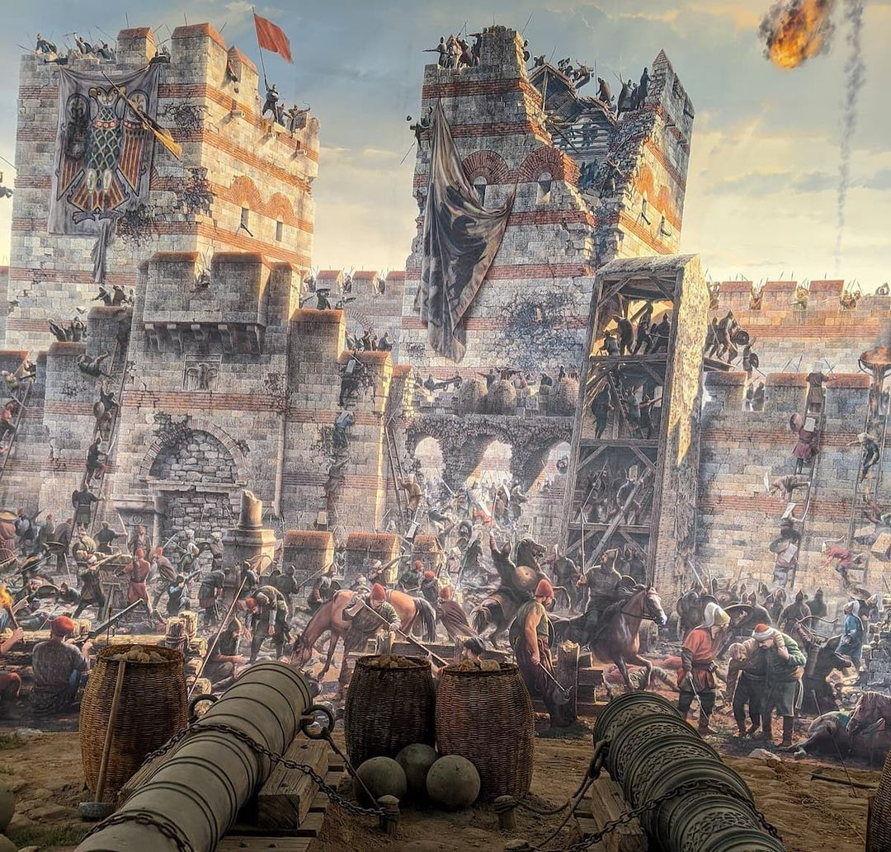

Una agencia construida alrededor de una sola biografía
Vestigia nació de una obsesión puntual: casi ninguna agencia ofrecía un recorrido que respetara el orden cronológico de una vida histórica. Los paquetes existentes mezclaban ciudades por cercanía geográfica o por conveniencia logística, y el relato quedaba fragmentado. Decidimos invertir la lógica: primero la biografía, después la logística.
Elegimos a Flavio Belisario como primer itinerario propio porque su vida atraviesa, de punta a punta, el Mediterráneo que hoy recorremos en crucero. Nació en los Balcanes, se formó como oficial en Constantinopla, combatió en la frontera persa, reconquistó el norte de África, entró en Sicilia y en Nápoles, sitió y perdió Roma varias veces, y volvió a la capital para terminar sus días entre honores y sospechas. Cada tramo de esa vida tiene un puerto real que todavía puede visitarse.
El diseño del paquete empieza en un mapa en blanco, no en un catálogo de hoteles. Ubicamos primero los años: 505 aproximadamente para su nacimiento, 530 para la victoria de Dara, 533 para el desembarco en África, 536 para la entrada en Roma, 540 para la toma de Rávena, y 559 para su última campaña, ya anciano, defendiendo Constantinopla de una incursión. Recién después de fijar esa línea de tiempo incorporamos cruceros, estadías y guías.
Cada escala del crucero corresponde a un año verificable, no a una parada pintoresca elegida al azar. El barco funciona como hilo conductor entre los tramos terrestres, y los guías reciben una cronología detallada antes de cada temporada para que ningún relato contradiga al anterior.
Trabajamos con historiadores, no solo con guías turísticos tradicionales. La diferencia se nota en el nivel de detalle: fechas de campaña, nombres de generales rivales, decisiones políticas de la corte de Justiniano y la relación, siempre tensa, entre el general y el poder que lo empleaba.
El resultado es un viaje que se lee como una biografía caminable. Quien lo recorre no visita ciudades sueltas: atraviesa una vida entera, en el orden en que sucedió, con el mar de fondo tal como estuvo presente en cada decisión que tomó Belisario.